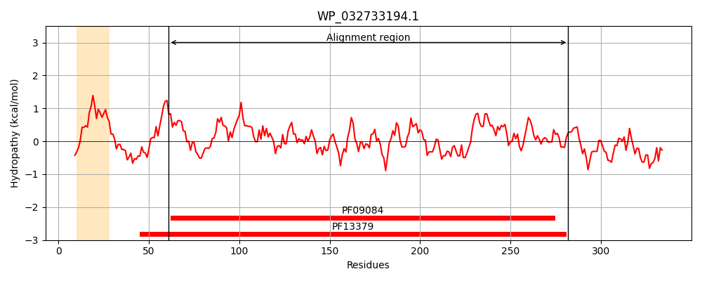
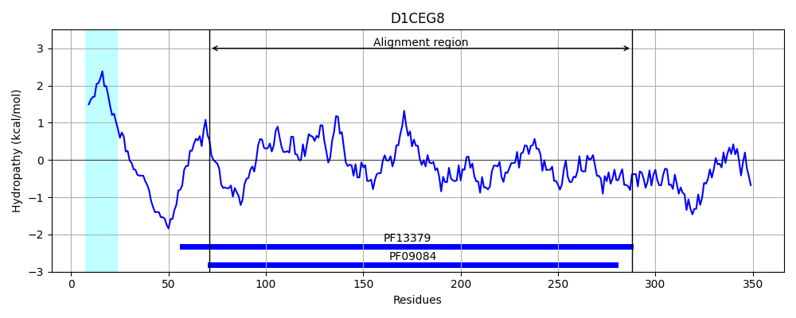
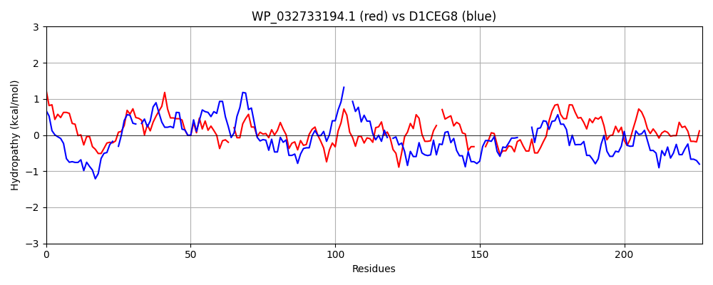

Hit Accession: D1CEG8
Hit TCID: 3.A.1.17.11
Hit Description: gnl|BL_ORD_ID|3003 gnl|TC-DB|D1CEG8|3.A.1.17.11 NMT1/THI5 like domain protein OS=Thermobaculum terrenum (strain ATCC BAA-798 / YNP1) GN=Tter_0402 PE=4 SV=1
Mach Len: 227
e:0.000002
Query TMS Count : 1
Hit TMS Count: 1
TMS-Overlap Score: 0.250000
Predicted Substrates:CHEBI:8843;riboflavin
BLAST Alignment:
Score: 115 , Bit scores: 48 bits, E-value: 1.6e-06, Alignment length: 227, Percentage identity: 26
Query: 61 VCLAPVAVAEQQKIFSKYNLDVEFVNFGNSTDVLLEAIATGKADAGVGMALRWLKALEQGFDVK-LTAGTHGGCLNLLTAKDSPFGGLESLKGQTIGVTDMAGPDKNFFAILLKRHGIDPISDVQWKVYPADLLSV-ALDKREIAAISG---SEPFSYRLLETGKYQLIASNMTGDYANLSCCVLGVSGSLARDHKPAAAALTQAILEAHSYAAAHPESVAQSFLAH 282
V AP VA+++ + + L+V+F N G +D L++ + TGK GV L A QG V L A + L+T + ++ LKG+ IGV G + +L H + +++ K+ V AL+++++ A+ G +EP R L + + ++ NL L S AAA+ +A ++ Y HPE Q L +
Sbjct: 71 VQFAPYYVAQEKGFYKEEGLNVKF-NHGIISD-LIKMVGTGKIPYGVASGDEVLVARSQGVPVVYLGAYFQKYPVVLITRSEDHITDIKQLKGKVIGVPGQFGA--TYTGLLALLHSAN-MNEKDVKIRSIGFTQVQALERKQVDAVMGYANNEPIQLRHLGVK----VNTIPVWEHLNLVSNGLITSQDKLSSDPQEAAAVVRATMKGLQYTIDHPEEAFQISLKY 288 | Protein Hydropathy Plots: |
|---|
|  |  |
Pairwise Alignment-Hydropathy Plot:
|
|---|
|  |